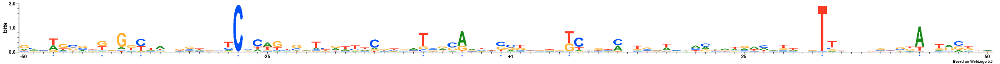
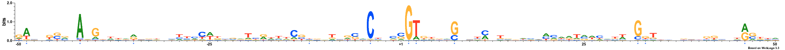
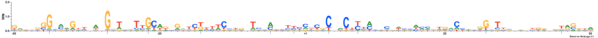
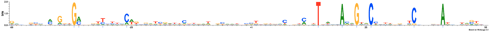
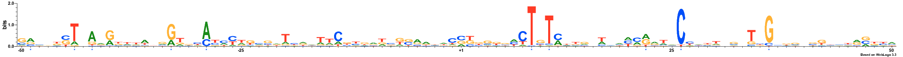
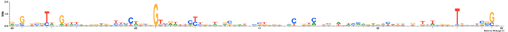
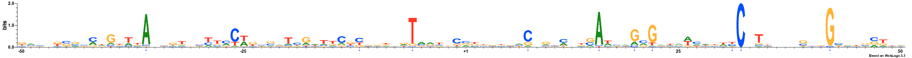
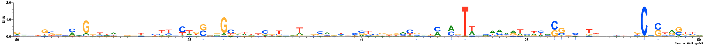
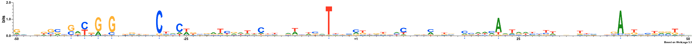
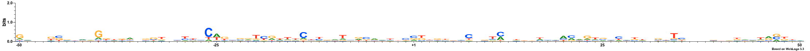

MODEL
Lambda: 7.0
Dataset structure: 1000 sequences with 100 features
Number of architectures in the best model: 10
Likelihood of best model: -119535.932697
Architecture 1: 59 sequences with 9 important features
Sequence logo for the important positions in architecture 1

Architecture 2: 105 sequences with 10 important features
Sequence logo for the important positions in architecture 2

Architecture 3: 64 sequences with 10 important features
Sequence logo for the important positions in architecture 3

Architecture 4: 46 sequences with 10 important features
Sequence logo for the important positions in architecture 4

Architecture 5: 64 sequences with 10 important features
Sequence logo for the important positions in architecture 5

Architecture 6: 126 sequences with 11 important features
Sequence logo for the important positions in architecture 6

Architecture 7: 149 sequences with 10 important features
Sequence logo for the important positions in architecture 7

Architecture 8: 33 sequences with 10 important features
Sequence logo for the important positions in architecture 8

Architecture 9: 259 sequences with 10 important features
Sequence logo for the important positions in architecture 9

Architecture 10: 95 sequences with 10 important features
Sequence logo for the important positions in architecture 10

Logo for the raw data

NOTE: All important positions in the logos are followed by an asterisk symbol and are coloured blue